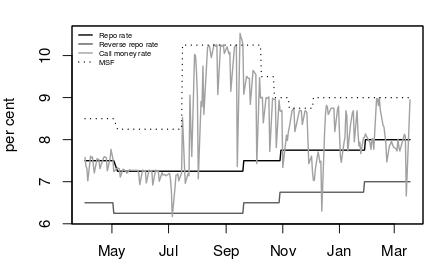

Hold on to interest rates
Financial Express, 1st April 2014
The impact of tighter fiscal and monetary policy on inflation is now visible in the recent price data. Inflation, measured both by the wholesale price index and by the consumer price index, has come down. It may still be too early to cut rates, but RBI Governor Raghuram Rajan can now afford to hold rates unchanged in today's monetary policy announcement. His strategy of an aggressive attack on inflation, despite the scepticism often voiced in the Indian monetary policy debate about the effectiveness of monetary policy, was the right strategy and is yielding results.
Considering that inflationary expectations in India are high and persistent, and could take a while to come down, Rajan should not cut the repo rate as yet. If the WPI inflation measure is the target, there is a case for cutting rates since this has come down sharply. However, the CPI, the target towards which the RBI sensibly appears to be moving, is still above 8% and there is fear that it may go up due to unseasonal rains. Also, CPI based inflation has not remained low long enough for inflationary expectations to fall.
The fiscal and monetary contraction of the last 9 months, as well as the slowdown in the economy, have contributed to the reduction in inflation. In this environment, effective communication by RBI that its focus will be on inflation control, has played an important role. In addition, the setting up of the Urjit Patel committee and its view that RBI should adopt inflation targeting has helped counter some of the traditional RBI view that monetary policy has no impact on inflation, that India has a weak monetary policy transmission mechanism so there is no point in trying to raise rates, that inflation in India cannot be measured properly and so on.
The war on inflation is still not won. The present dip in inflation must be sustained for many months before RBI can relax. Despite the fall in GDP growth, the consequent slowdown in demand, and the fall in commodity prices, Indian inflation is higher than what is seen elsewhere in the world. Inflation in food has contributed most, but inflation in non-food has also been sticky.
Looking forward, there is a contradiction between RBI's aggressive stance on inflation and its intervention in the foreign exchange market. RBI's stance on monetary policy could be undermined by its intervention in the foreign exchange market. In recent weeks, RBI appears to be intervening in the foreign exchange market to prevent the rupee from appreciating. The extent of intervention and its sterilisation is not known yet. If the intervention is unsterilised, then it would lead to an increase in liquidity and would pull down interest rates even without a monetary policy announcement. Indeed since RBI's monetary policy is not conducted only through the interest rate instrument, but also through its intervention and sterilisation, something that the Governor does not announce with the policy stance, it has been seen in the past that while actions on the policy rate move in one direction, the liquidity conditions in the market can move in quite the opposite direction. This was the story of the mid-2000s, when RBI was intervening in the foreign exchange market to combat rupee appreciation and raising the repo rate at the same time to fight inflation. Its intervention was only partly sterilised and was pumping liquidity into the system pushing up inflation. As a consequence, the policy rate hikes were ineffective.
Inflation targeting countries usually solve this problem by adopting a flexible exchange rate. In other words, the exchange rate is allowed to move, while inflation is stabilised. Sometimes there may be occasional sterilised intervention by the central bank. However, central banks that target inflation do not pursue pegged exchange rates for long periods. This means that they do not require resources for sustained sterilisation. While the Urjit Patel committee has proposed that RBI target inflation, it has also proposed that the central bank should get unlimited sterilisation powers. Occasional foreign exchange intervention and sterilisation to contain volatility do not require unlimited sterilisation capacity. If RBI is move to an inflation targeting framework, it cannot plan to do unlimited sterilisation. The People's Bank of China, the Chinese central bank, which targets the exchange rate, has such powers. Other central banks do not have such powers as these are inconsistent with the mandate of inflation targeting. In other words, if RBI is to seriously adopt inflation targeting, it must give up on pegging the exchange rate. Trying to target inflation and exchange rate simultaneously on a sustained basis is inconsistent.
A further consideration in the decision about the stance of monetary policy would be global liquidity considerations. Janet Yellen's recent comments suggest that the US Fed could start raising rates next year. As long as the US monetary policy remains unconventional, i.e., until the time comes when the FOMC discusses and decides policy interest rates rather than the purchase of bonds, it remains in uncharted territory. Low inflation, along with a low current account and fiscal deficit, would be a more prudent policy, as there could be sharp and sudden changes in US and global liquidity conditions. This may prompt RBI to keep interest rates unchanged.
Back up to Ila Patnaik's media page
Back up to Ila Patnaik's home page